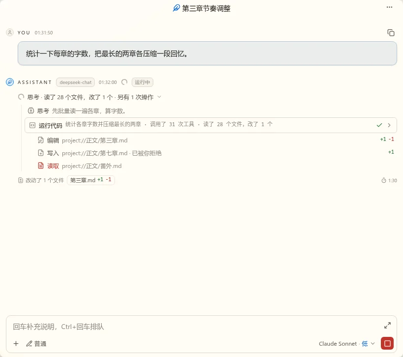
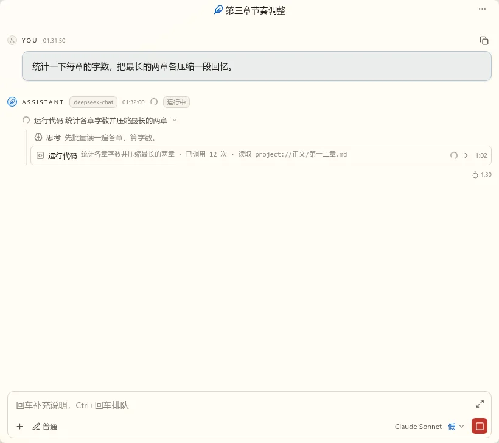
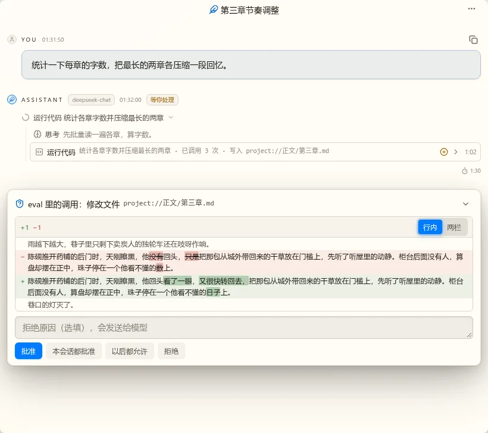
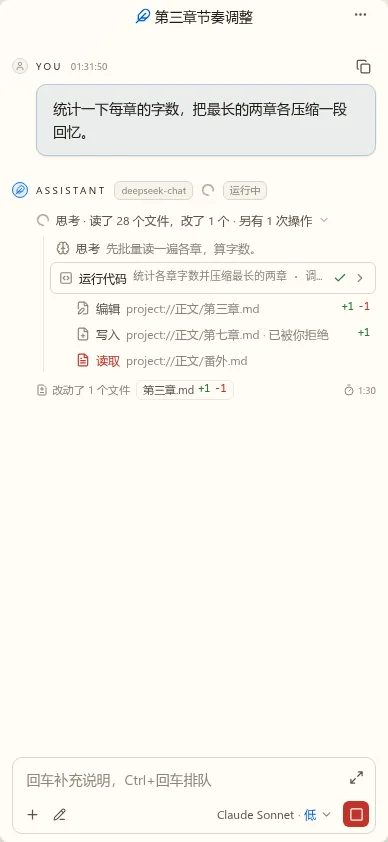

t21 切片 5：eval 在对话里的样子
Lab 场景（手写的消息数据，亮色），思维链用“逐步展开”摆出来；产品里缺省是收起的，点开思维链才看到卡片。按决定 6 的注意力排序做：eval 是思维链里的卡片，嵌套调用收成计数，改了文件、出错、被拒的几次露在卡片下，其余点开看。
跑完

副标题：代码的标题 · 调用了 31 次工具 · 读了 28 个文件，改了 1 个。卡片下露出改了文件的、被拒的、出错的三次；思维链摘要与轮末改动也算上了代码里读改的文件。点开卡片：代码（默认收起）、输出、全部 31 次调用。
运行中

副标题：已调用 12 次 · 正在调的那一个；头部右侧是已用时（含等审批的时间）。运行中的卡片都写已用时，不只 eval（待确认清单）。
代码里的写工具在等批准

向导标题写明是 eval 里的调用；预览、按钮、批量与“第几个”照旧。等批准的那一次算作正在调的那一个。
手机宽度

副标题截断时计数在省略号后面；卡片下的几行与思维链摘要照样写着读改了几个文件。